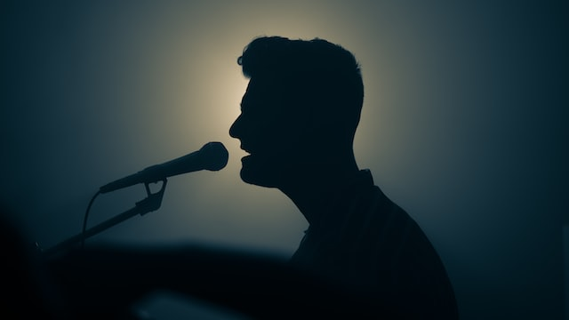

Fishing
I love fishing at my free time. When I was in Dharan, I used to visit fishing sopts frequently. I even ordered expensive fishing rods from abroad just to fulfill my passion.

Gaming
I have been interested in the gaming field since my childhood. My first video games were miniclip games. The first ever games I had played were "3 foot ninjas" and other miniclip games.

Music
I wasn't interested in music field until I was in grade 8. A friend of mine insisted me to sing a song for her, and so I did. She loved my voice and inspired me to continue improving. Since then I got interested in music and started singing even in bands.